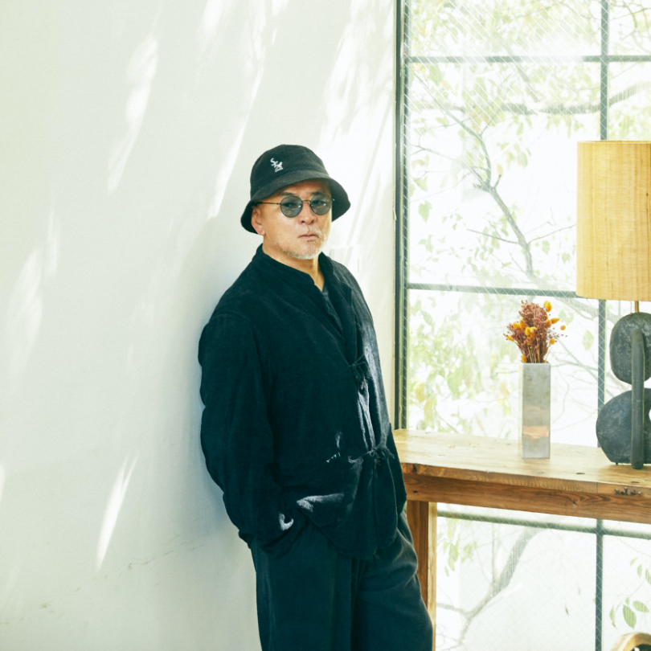
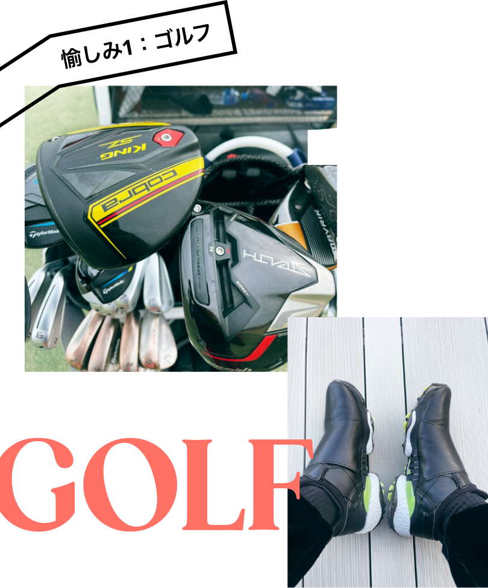
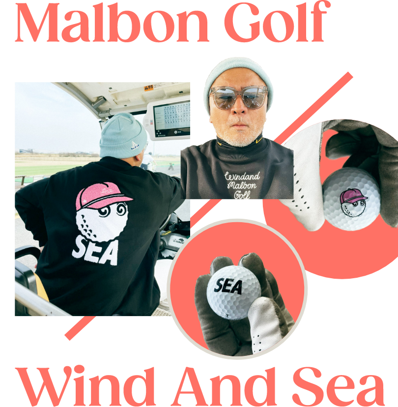
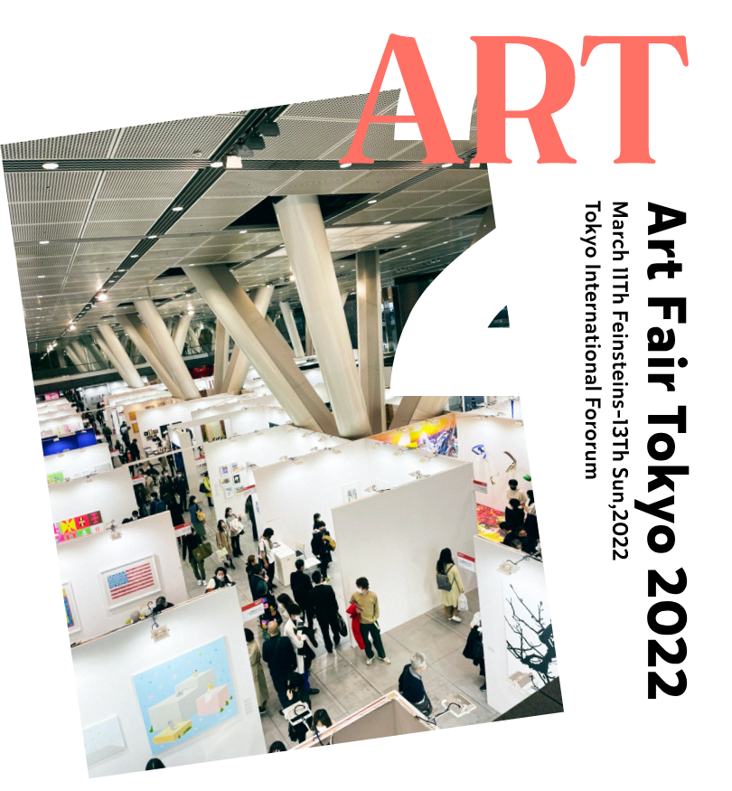
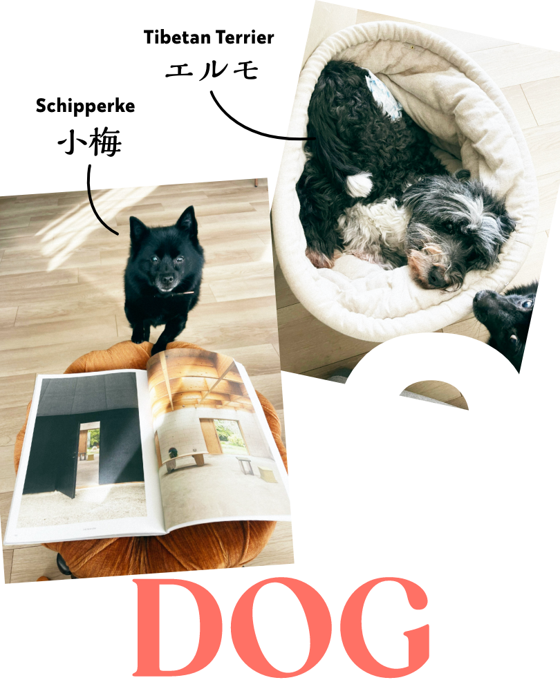
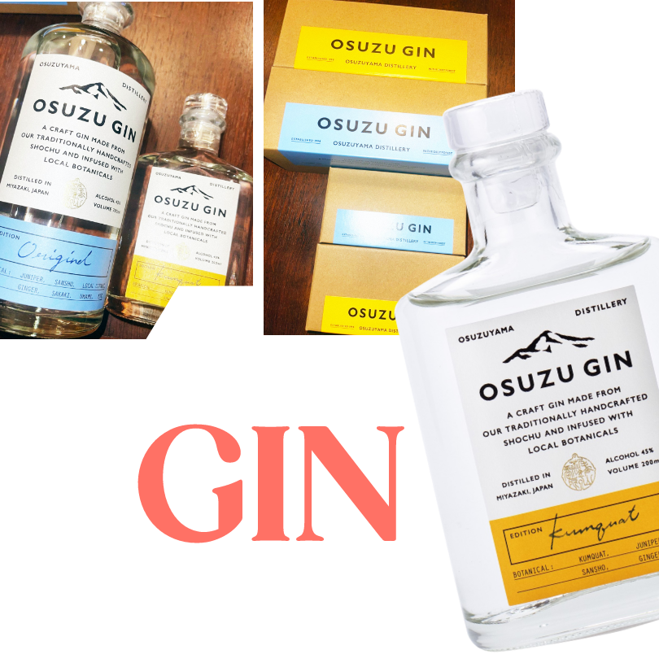
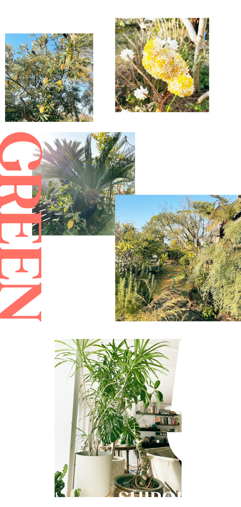
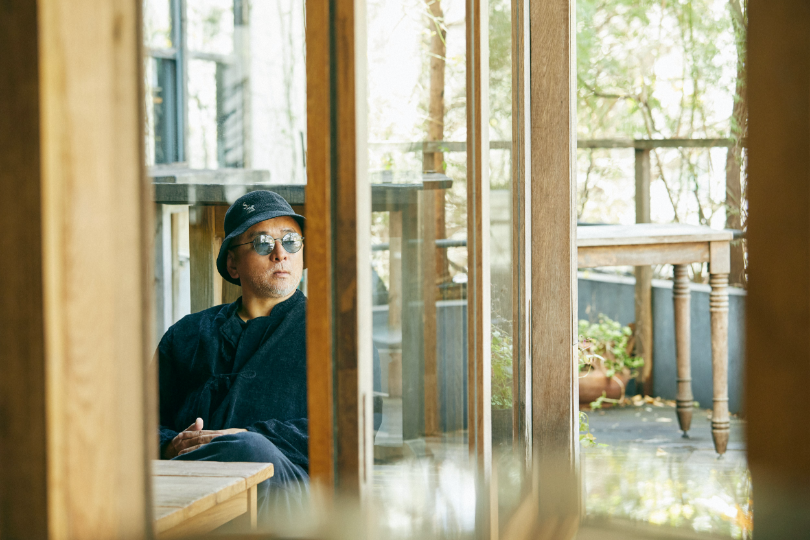
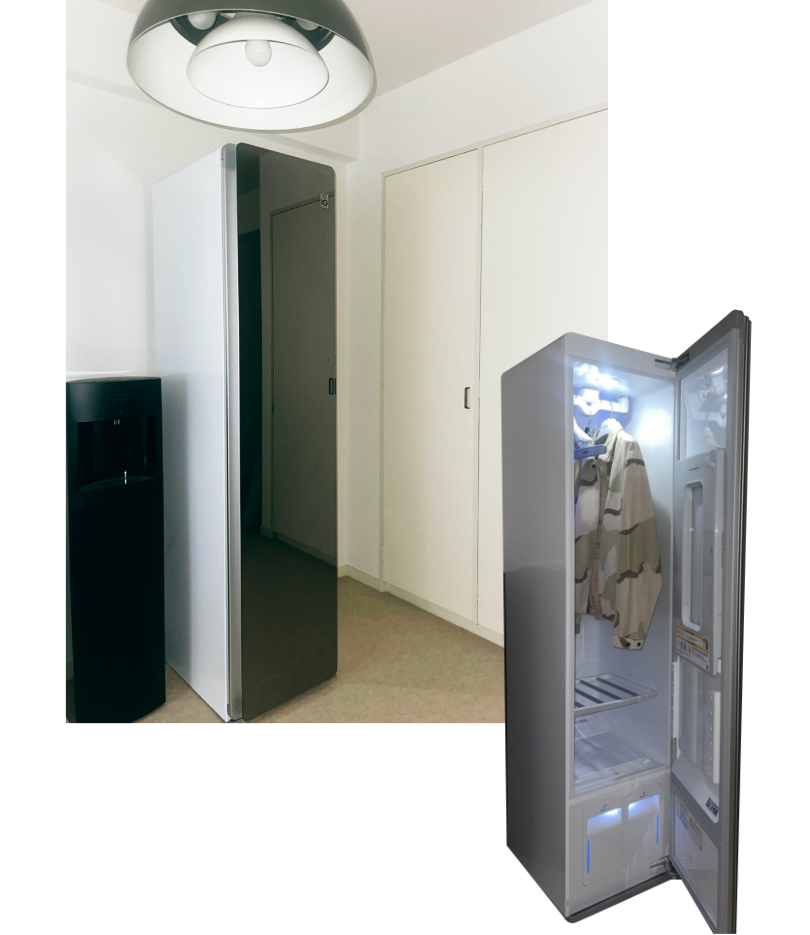

2022.03.30
スタイリスト、デザイナー、フォトグラファー、ガーデナー、クリエイティブディレクター。あらゆる肩書きを超えて、時代の２、３歩先を縦横無尽に活躍する熊谷隆志さんが、今、生活の中で愉しみしていることとは？ LG Stylerに注目していた理由とともに教えていただきました。

ゴルフクラブは主に〈Titleist〉を愛用。シューズは〈adidas〉のTOUR360。ワンタッチでシューレースを締めることができるボアシステム搭載。
『一年半前くらいに知人にすすめられたのがきっかけ。それまであまり興味がなかったのですが、やってみたらすごく面白い。今では週に2,3回くらいラウンドしてます。すごく戦略性が高いゲームで、頭を使うところが面白いんですよね』
好きが高じて、
コラボアイテムもリリース
コラボアイテムもリリース
『今アメリカで人気の、ゴルフを中心としたライフウエアブランド〈マルボンゴルフ〉と、僕が手がけている〈WIND AND SEA〉とコラボアイテムをリリースすることになりました』

『僕は〈TANGRAM〉っていうゴルフブランドも展開しているのですが、あえてそれではなく、ストリートブランドの〈WIND AND SEA〉とコラボしたのが面白いところ。いろんなユニークなアイテムが揃うので是非チェックしてみてください』
『アートは昔から好きで、色々集めています。先日も「アートフェア東京 2022」に遊びに行ってきました』

『僕は売り買いする感覚はないんだけど、アートは今や不動産に並ぶか、それ以上に価値のあるものになってきている。今後もっとアートシーンは盛り上がっていくんじゃないかな。タイミングさえ合えばギャラリーに行って、面白そうなものを探しています』
『黒い方は、スキッパーキという犬種の「小梅」。スキッパーキは、もともとベルギーのフランダース地方にいた牧羊犬で、ベルギー王室でも飼われていた犬種』

『グレーの毛の長い方は、チベタンテリアという犬種の「エルモ」。諸説あるけど、ラマ教（チベット仏教）の寺院では“幸福を招く守護犬”とされていたという話もありますね。小梅は12歳でエルモは16歳。愛情を込めて育てています』
『焼酎「百年の孤独」を作る黒木本店の別蔵である〈尾鈴山蒸留所〉から発売されているジン。これは美味しいですよ。黒木本店のお酒はいつもチェックしていて、新しいものが出たら送ってもらってコレクションするほど。特にこれからの季節は爽やかなジンが合いますよね』

『グリーンはもうずっと続けているライフワークのようなもの。自宅だけでなく仕事としても請け負うことがあります』

『写真は僕の葉山にある自宅の庭と、白金の自宅の鉢植え。葉山は住み始めて10年経ちますが、どんどん増えていく一方。主にオーストラリアの植物が中心。あまり手間をかけなくても勝手に育ってくれるんですよ。緑に囲まれて生活するのはやはり気持ちがいいです』
『僕は定期的にコルギ（韓国の全身美容法）に通っているんですが、そこにLG Stylerが置いてあったんです。ゴルフ終わりにいくことも多いのですが、施術中に洋服をかけておくと、汗で濡れていた服が帰るころには匂いも取れてすごくクリーンになって、気持ちよかった。あんまり良かったので、これは自宅にも欲しいと思って導入しました』


『服はもちろんだけど、帽子をケアするのにもいいですよね。被り物って洗濯しずらいものが多いし、いちいちクリーニングに出して戻ってくるのを待つのも面倒だしね。まだ導入したばかりだけど、いろいろなものに使えるんじゃないかなと期待しています。愉しみです』
熊谷隆志（くまがいたかし）
1970年生まれ。渡仏後、’94年スタイリストとして活動開始。’98年以降はフォトグラファーとしても活躍。同時にクリエイティブ・ディレクターとして自身のブランド、ウィンダンシーを手掛けるほか、さまざまなブランドやショップのディレクションにも携わる。ファッション、クラフト以外に飲食の分野にも進出。趣味はサーフィン、ゴルフ。グリーンライフにも造詣が深い。
1970年生まれ。渡仏後、’94年スタイリストとして活動開始。’98年以降はフォトグラファーとしても活躍。同時にクリエイティブ・ディレクターとして自身のブランド、ウィンダンシーを手掛けるほか、さまざまなブランドやショップのディレクションにも携わる。ファッション、クラフト以外に飲食の分野にも進出。趣味はサーフィン、ゴルフ。グリーンライフにも造詣が深い。
Interview CATAL DESIGN